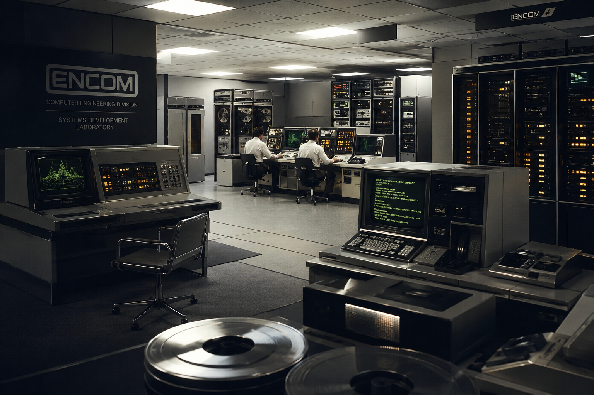
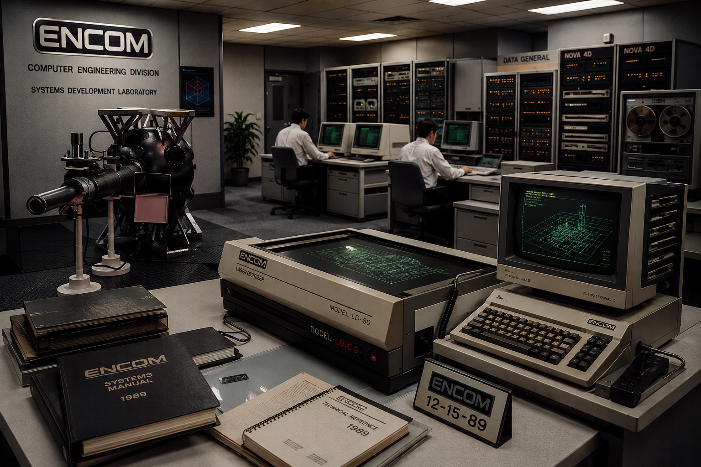

EL LEGADO DE LA INNOVACIÓN DIGITAL
Desde nuestros humildes orígenes en un garaje informático hasta convertirnos en la columna vertebral de la autopista de la información global.
El nacimiento de un gigante
ENCOM comenzó como una pequeña empresa de desarrollo de software fundada con una visión clara: redefinir la interacción humana con los entornos virtuales. Con el lanzamiento de los primeros mainframes de procesamiento binario y simuladores analíticos, marcamos el inicio de la era de la computación comercial de alta densidad.

El rediseño de "The Grid"
Bajo una dirección audaz, ENCOM se expandió hacia la industria del entretenimiento y la defensa digital descentralizada. La creación de algoritmos autónomos avanzados y sistemas operativos interconectados nos consolidó como líderes indiscutibles en infraestructura tecnológica mundial, pavimentando el camino para el software del nuevo milenio.
